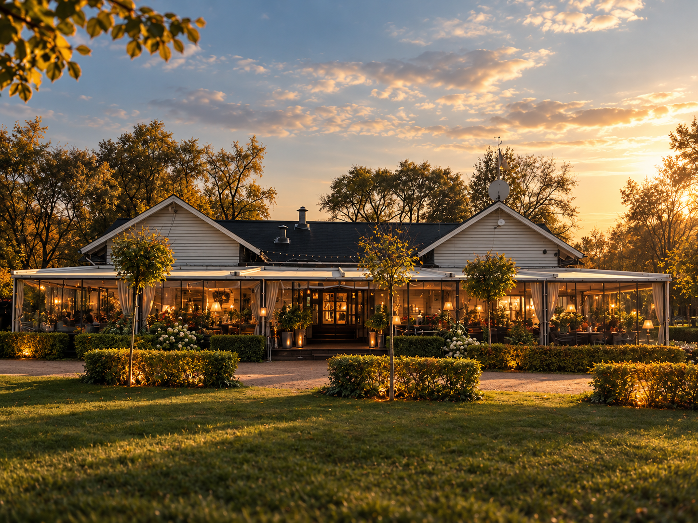
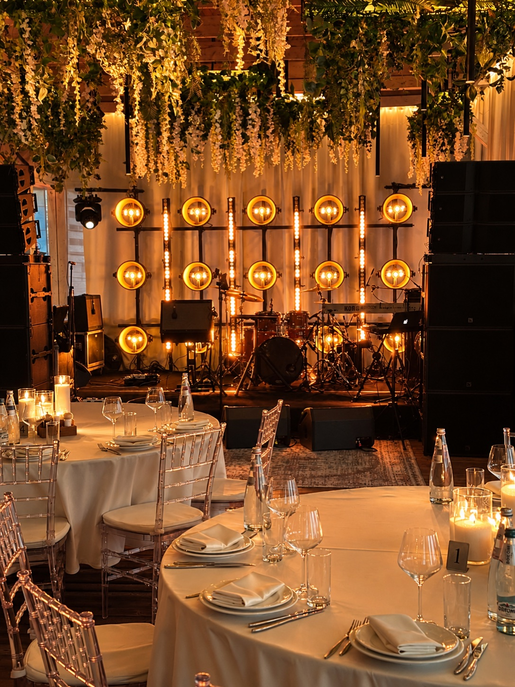
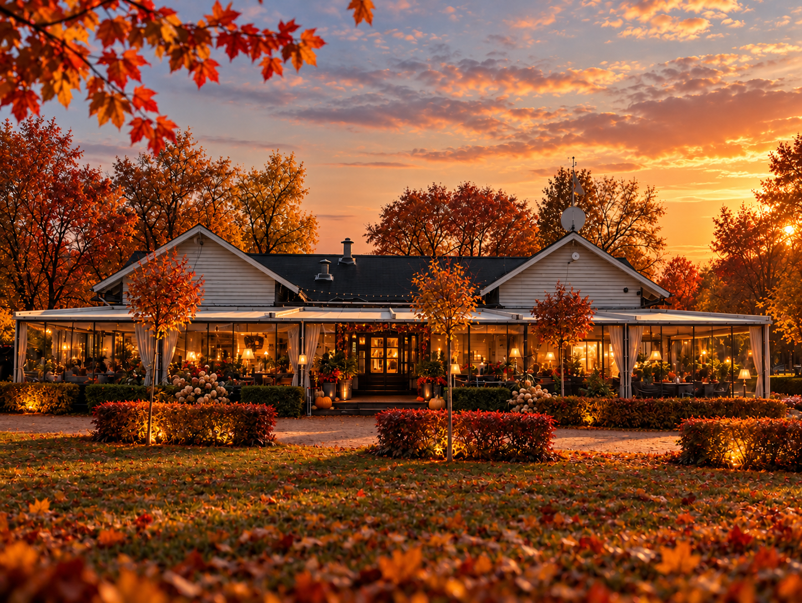

Место, где Москва становится другой.
Вдали от суеты. В самом сердце природы.
Не просто ресторан
«Поместье-Парк» — клуб-ресторан в Серебряном Бору, где природа встречается с гастрономией, а время приобретает особую ценность.
Здесь шум большого города сменяется шелестом деревьев, а обычный ужин может стать маленьким путешествием за пределы повседневности.
Мы создали пространство для тех, кто ценит атмосферу, внимание к деталям и искреннее гостеприимство.

Гастрономия
Семейный обед, романтический ужин или встреча с друзьями — откройте для себя меню кухни, бара и винную карту ресторана.
ПОСМОТРЕТЬ МЕНЮ
Ваши особенные события
Европейский зал, Панорамный зал и понтон на воде — три площадки для свадеб, банкетов и частных мероприятий до 140 гостей.
ВЫБРАТЬ ПЛОЩАДКУ
Четыре сезона. Одно любимое место.
Весеннее пробуждение, летние вечера, золотая осень и зимний уют. В любое время года «Поместье-Парк» открывается по-новому, сохраняя ощущение уединения, комфорта и близости к природе.
Место, куда хочется возвращаться.
Станьте частью нашей истории.